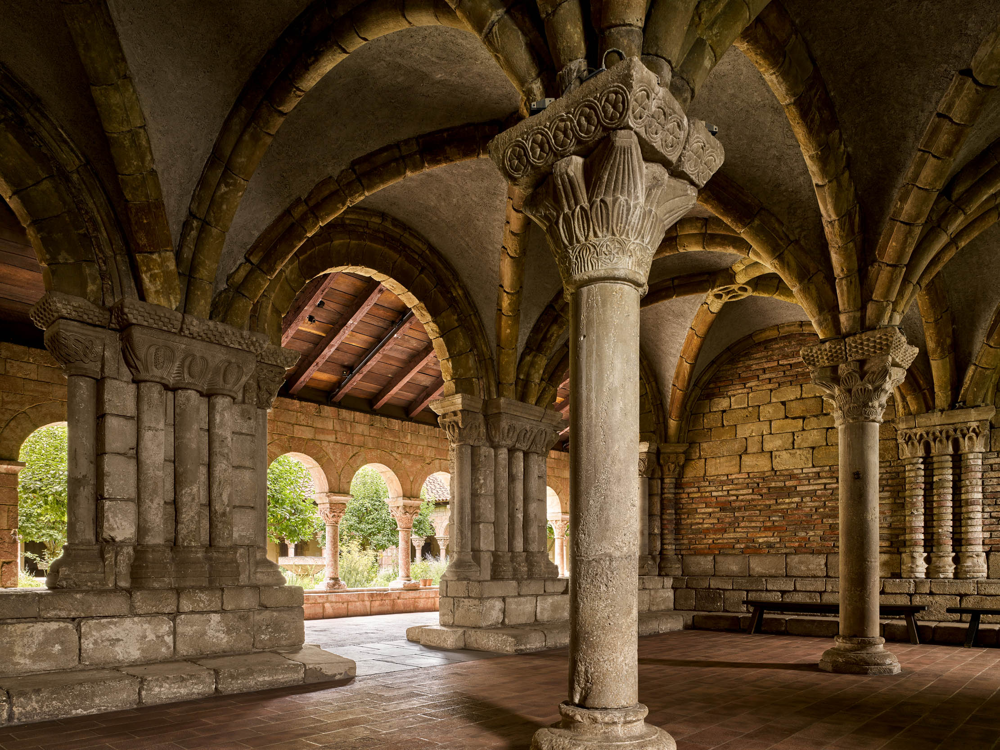

A serene escape in Fort Tryon Park, dedicated to medieval art and architecture, offering a unique journey through history and timeless beauty in New York City.
The MET Cloisters is a branch of the Metropolitan Museum of Art in New York City, dedicated exclusively to the art, architecture, and gardens of medieval Europe. Located in Fort Tryon Park in Upper Manhattan, the museum is designed to resemble a medieval European monastery, incorporating elements from five actual cloisters transported from France, Spain, and other parts of Europe. Its collection spans from the early Middle Ages to the late Gothic period, featuring illuminated manuscripts, sculptures, metalwork, textiles, and stained glass, all carefully curated to immerse visitors in the cultural and spiritual life of the medieval era. The building itself, with its stone walls, arched walkways, and peaceful gardens, provides a contemplative atmosphere that echoes the monastic environments it replicates.

The history of the MET Cloisters dates back to the early 20th century, when art historian and collector George Grey Barnard amassed a vast collection of medieval art. Barnard’s collection, along with his vision of creating a space dedicated to medieval European culture, caught the attention of the Metropolitan Museum of Art, which acquired the collection in 1925. The museum was subsequently constructed between 1934 and 1938, funded by philanthropist John D. Rockefeller Jr., who donated the land in Fort Tryon Park and supported the building’s design. Over the decades, the Cloisters has continued to expand its collection and maintain its historical integrity, offering both scholars and the public an authentic medieval experience in the heart of New York City.
The MET Cloisters is significant to New York City for several reasons. Culturally, it serves as a unique repository of European medieval art, giving New Yorkers and international visitors access to a period often underrepresented in the United States. Architecturally, it stands out as a serene and historically resonant landmark amid the bustling city, offering a rare space of tranquility and reflection. Additionally, its location in Fort Tryon Park connects art with nature, making it an integral part of the city’s cultural and recreational landscape. The Cloisters also plays an educational role, hosting lectures, workshops, and exhibitions that deepen public understanding of medieval history and art, cementing its reputation as one of New York City’s most distinctive and treasured museums.
The appeal of the MET Cloisters lies in its ability to transport visitors to another time and place, offering a rare and immersive glimpse into the medieval world. Its architecture, modeled on authentic European monasteries, combined with serene gardens and natural views of the Hudson River, creates a contemplative and almost otherworldly atmosphere that contrasts sharply with the urban intensity of New York City. Visitors are drawn not only to the extraordinary collection of medieval art—illuminated manuscripts, tapestries, sculptures, and stained glass—but also to the sense of quiet discovery that comes from exploring its cloistered corridors and hidden corners. The museum’s blend of history, art, and environment makes it both an educational destination and a peaceful escape, appealing to anyone interested in culture, spirituality, or simply a moment of calm in the city.
Someone should visit the MET Cloisters to experience a truly unique cultural and historical journey unlike anywhere else in New York City. It offers the chance to step into a meticulously recreated medieval world, where art, architecture, and nature come together to tell stories of European history and spirituality. Visitors can marvel at rare illuminated manuscripts, intricate tapestries, and detailed sculptures while wandering peaceful cloisters and gardens that invite reflection and contemplation. Beyond its art, the museum provides a serene escape from the city’s pace, making it perfect for anyone seeking inspiration, education, or simply a quiet, immersive experience. Going to the Cloisters is not just a museum visit—it’s a chance to feel connected to centuries of human creativity and history.